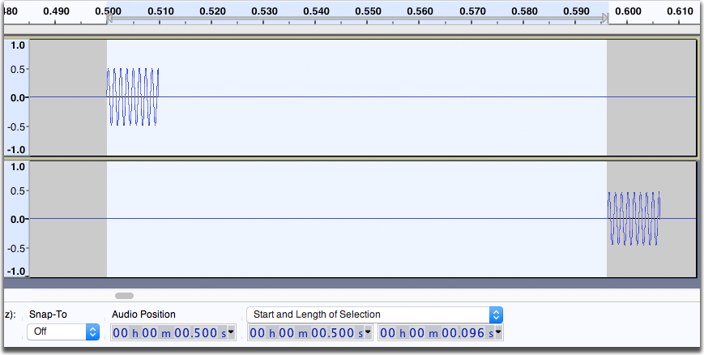

Latency Test
What is Latency?
Latency refers to the delay between the time the audio enters the computer and the time Audacity is able to record it to a track. For example, if you are recording a keyboard track, latency is the delay between the time you strike a key and the time that note is recorded.
Latency is important only when you are overdubbing, that is, recording a new track while listening to previously-recorded track(s). You want what you play to be in sync with the tracks you are listening to. Audacity can correct for latency, but you have to tell it what the correction amount is. You enter this correction amount in the Devices tab of the Preferences dialog.
What you need
To do a latency test you will need a loop-back cable. The type of cable you need will depend on the way you are connecting your recording equipment to the computer.
Connecting to the line input and line output ports on the computer
If you are connecting your recording equipment to the line input and line output jacks on your computer you need a cable with a stereo mini-plug at each end.


A stereo loop-back cable A loop-back cable plugged in
Using an external USB audio interface
If you are not using the line input and/or line output ports on your computer but are instead using a USB audio interface device for input and/or output, plug the loop-back cable into the appropriate jacks on the USB interface. Depending on your interface you may need a different type of loop-back cable.
Example of loopback with a USB audio adapter
Using a microphone
If you are using a microphone to record overdubs then the loop-back cable method will not work for you. Instead you need to set up the microphone in front of a speaker or headphones! Don't worry, you will not get feedback because you've turned Software Playthrough off.
Example of loopback using a microphone
| Note that using a USB microphone is not the best way to record overdubs. These microphones are great for podcasters who just want to record their voice and are not worried about syncing to music. The problem with these microphones is that the only way you can hear yourself in your headphones is by turning Software Playthrough On. Software playthrough introduces its own delay (different from latency) which you will hear in your headphones. Tests on the same system used for the latency test below revealed that the Software Playthrough delay was 65 milliseconds. This does not sound like much, but it's like hearing your voice coming out of speakers 70 feet away. If you are serious about overdubbing, get an inexpensive mixer and a good microphone to go with it.
For more information on overdubbing with Audacity, see our Tutorial - Recording Multi-track Overdubs |
Doing the latency test
Turn off un-necessary applications before starting the test so that the computer can mostly concentrate on playing and recording the audio.
Plug in the appropriate loop-back cable for your setup.
Launch Audacity. Click on .
On the Recording tab, set the following settings:
-
 Other tracks while recording (overdub) checked.
Other tracks while recording (overdub) checked. -
 Software Playthrough of input not checked.
Software Playthrough of input not checked. - Always record on a new track checked.
On the Devices tab, in the Latency section, set the following settings:
- Set the Track shift after record to 0 (zero).
- Leave the Buffer length value at its default value.
- Click .
In Selection Toolbar make sure that "Snap To" is set to "Off". Above the second and thrid group of numbers, make sure that Beginning and Length of Selection  is selected. Click on one of the downward-pointing arrows in the digits boxes to the right of Snap To and select hh:mm:ss + milliseconds
is selected. Click on one of the downward-pointing arrows in the digits boxes to the right of Snap To and select hh:mm:ss + milliseconds  .
.
Click on . Set "Number of Measures (bars)" to 2, and set the "Beat Sound" to Ping  . Click to generate the click track. Make sure the first track is completely selected (if you do nothing, it will be completely selected). Now click the Record button in the Transport Toolbar - the rhythm track will be played back and recorded on a new track through the loop-back cable. You will now have something like this:
. Click to generate the click track. Make sure the first track is completely selected (if you do nothing, it will be completely selected). Now click the Record button in the Transport Toolbar - the rhythm track will be played back and recorded on a new track through the loop-back cable. You will now have something like this:
The top track is the original click track, the bottom track is the looped-back recording. Note the delay.
Zoom in so you can see one of the clicks in the top track and its delayed version on the bottom track. Using Selection Tool, drag a selection starting at the start of the click in the top track and ending at the start of the delayed click in the second track. You should see something like this (your numbers will likely be different):
 The selections go from the original click to the delayed version in the bottom track.
You can now read the latency directly from the second panel of numbers. In this case it is 0.096 seconds, or 96 milliseconds. Click on , click on the Devices tab, and enter the negative of this number in the Track shift after record box - in this case it would be -96.
Checking the result
Delete the second track by clicking the close box in its Track Control Panel. Click the Zoom to Fit  button to see the entire click track. Click in the Track Control Panel of the remaining track to select it, then click the Record button. After the recording is finished Audacity will apply the latency Correction by pushing the newly-recorded track back by the Latency Correction amount. Note the two arrows at the left end of the second track - they are warning you that latency correction has been applied and part of the recorded track has been pushed left so that it starts before 0 seconds. This is OK, it is what we wanted to happen. The arrows are there to remind you that latency correction has been applied, just in case that's not what you wanted.
button to see the entire click track. Click in the Track Control Panel of the remaining track to select it, then click the Record button. After the recording is finished Audacity will apply the latency Correction by pushing the newly-recorded track back by the Latency Correction amount. Note the two arrows at the left end of the second track - they are warning you that latency correction has been applied and part of the recorded track has been pushed left so that it starts before 0 seconds. This is OK, it is what we wanted to happen. The arrows are there to remind you that latency correction has been applied, just in case that's not what you wanted.
Note the arrows at left end of recorded track: latency correction has been applied with the track moved backwards.
Zoom in on one of the clicks and verify that the clicks in the two tracks line up.
Note that there is still a tiny delay between the two tracks
You'll never get it absolutely perfect. In this case we're still off by 17 samples. At 44100 samples per second that's about 0.39 milliseconds. This is as close as we're going to get, and it is not an audible difference. This is the length of time it takes a sound wave to travel about 5 inches, and the latency will probably have natural variability greater than this each time you record. However if you really need to, you can set the latency correction amount to a fraction of a millisecond (for example -96.4).
If you change recording or playback devices or audio host
If you change any of your recording or playback (for example, if you change from using the line input port on your computer to using a USB audio interface) or if you use the same device but change the Audio Host in Device Toolbar, then you will need to do this test again. The test you just did only applies for the specific inputs and outputs and host used during the test. Equally you should record for real with as many other applications shut down as possible, which was the scenario in which you did the test.
All audio behind zero warning
If you make a recording that is shorter than the latency correction the entire recorded track will be pushed left before 0 seconds. In this case Audacity will issue a warning dialog telling you that this has happened, and that Audacity has moved the track to start at 0 seconds. In this case you will have to manually correct for the latency using the Time Shift Tool. This is unlikely to be an issue, since in the example presented a recording of less than 96 milliseconds would need to be made at the start of the track in order to trigger this warning.